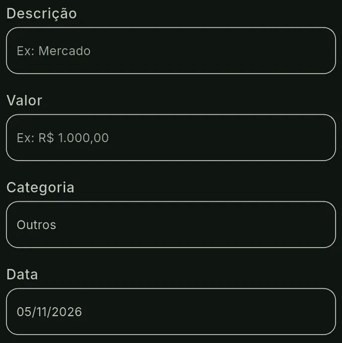

01 / REGISTRAR
Uma despesa,
Uma despesa,
quatro informações.
Descrição, valor, categoria e data. Você preenche, confere e registra.
Já anotou esse gasto antes? As sugestões do seu histórico ajudam a preencher os detalhes, sem precisar começar do zero.
